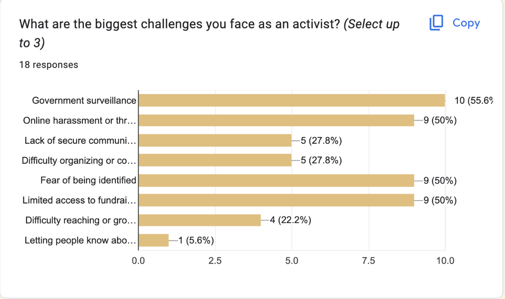
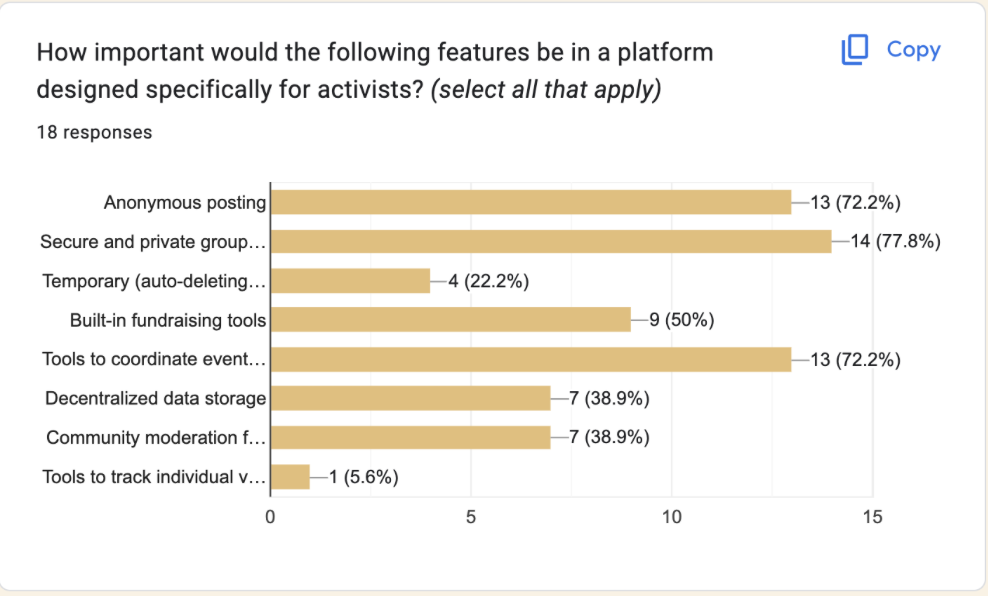
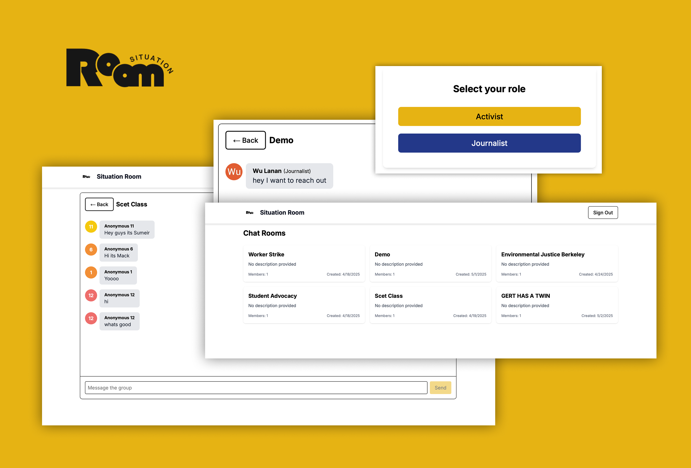

Context
Overview
Project: Situation Room — an anonymous, threat-aware web chat platform designed for activists and independent journalists.
Goal: Provide resilient, low-metadata real-time communication that balances practical anonymity with usable collaboration under censorship and surveillance.
Timeline: Jan 2025 – May 2025
Team
1 Journalist
1 Activist
1 Developer (Me)
1 Data Scientist
My Role
Role: Lead UX & Privacy Engineer — product-focused engineer on a cross-functional team.
Responsibilities: Threat modeling, secure UX design, prototype implementation, and coordinating pilot sessions and interviews.
Deliverables: Working prototype, onboarding flow, threat model, and pilot findings to guide future deployment.
Problem
Vulnerable communication channels endanger sources and journalists.
Many activists and journalists operate in environments where surveillance, censorship, and legal risk are real. Existing chat platforms either expose metadata, lack strong anonymity guarantees, or depend on trusted infrastructure that can be blocked or seized. The challenge: build a usable conversation space that minimizes identifying traces, resists censorship, and still supports real-time collaboration.
Research
According to a targeted survey during research, more than 50% of respondents reported that government surveillance and the fear of being identified were the biggest challenges they faced as activists. Respondents prioritized features that reduce exposure while enabling coordination:
- Anonymous posting (remove persistent identifiers from public messages)
- Secure, invite-only private groups for trusted collaboration
- Event coordination tools (time/place coordination with minimized metadata)


Results
Guided by threat modeling and the survey findings (where >50% of respondents named government surveillance and fear of identification as the primary concern), we prioritized anonymous posting and secure invite-only groups. The prototype implemented lightweight mechanisms for anonymous posting and invite-only groups to minimise centralised traces.
Key outcomes
- Anonymous posting: messages can be published without persistent identifiers; server logs are minimized and retention windows are short by design.
- Secure private groups: groups with client-side key handling reduced group metadata exposure while keeping membership manageable for small teams.
Pilot findings
- Mean pilot trust score: 4.2 / 5 — participants reported higher perceived privacy when shown the privacy affordances.
- Onboarding success: 92% — most testers completed setup in the pilot with the simplified onboarding flow.
- Feature preference: testers repeatedly cited anonymous posting and private groups as the most valuable features during follow-up interviews.

Product & Impact
The end result is a lightweight web prototype that demonstrates practical privacy affordances aligned to users' stated needs. The demo currently implements anonymous posting and invite-only private groups.
Impact from pilots and interviews: pilot participants reported increased willingness to share sensitive updates in the prototype compared with standard platforms, and prioritized the private-group workflow for ongoing collaboration. These findings indicate the implemented features can raise practical safety for small work groups and newsrooms when paired with careful deployment and training. The project was developed as part of ENG C183F at UC Berkeley and received the class Social Impact award for its focus on protective design for high-risk users.
Deliverables included: the working prototype demo (anonymous posting & private groups), the threat model and design notes, and a short onboarding guide produced for pilot participants.

Reflection
The research reinforced a recurring lesson: privacy features must be obvious and usable to be protective. Strong technical guarantees are only effective when paired with clear onboarding and honest descriptions of threat limitations. Simplifying the setup increased adoption in our pilots, but also surfaced edge cases where more robust key management and defence-in-depth are necessary.
Trade-offs & next steps: prioritise stronger client-side key management, implement and test the designed event coordination and resilient transport approaches (e.g., WebRTC + relay meshes), and explore distributed relay architectures to reduce central points of failure. Future pilots should measure real-world adversary scenarios and expand participant diversity to validate the design under pressure.
Thanks team!!!